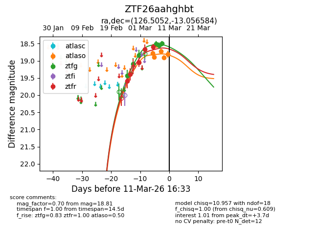
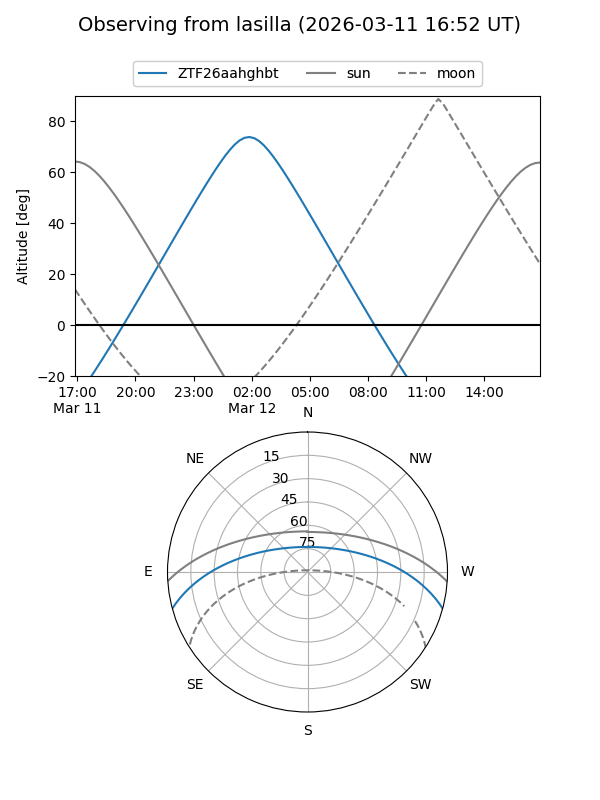
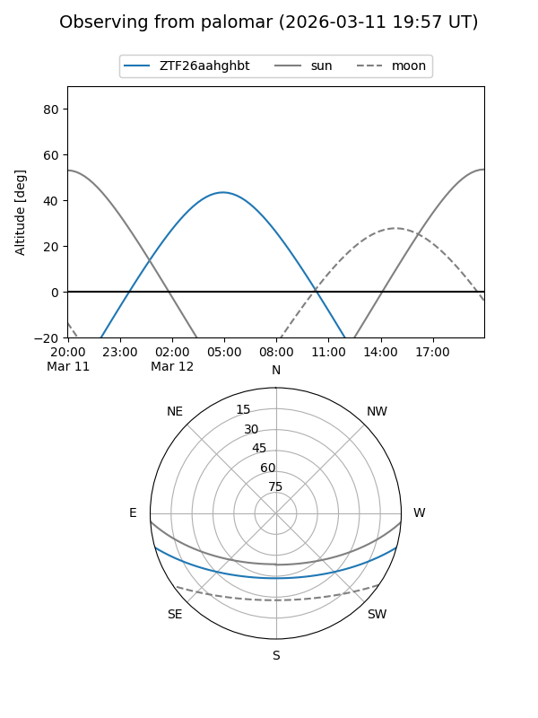
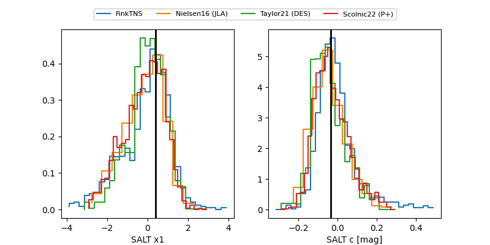

ZTF26aahghbt
Target ZTF26aahghbt at 2026-03-11 16:34
Aliases and brokers:
FINK: link
Lasair: link
ALeRCE: link
alt names
ZTF26aahghbt (ztf,fink_ztf)
Coordinates:
equatorial (ra, dec) = 126.5052,-13.05658
equatorial (HMS+DMS) = 08:26:01.25,-13:03:23.70
galactic (l, b) = (235.9555,+14.16502)
Flags:
Photometry:
last atlaso=18.81, ztfg=18.50, ztfr=18.60
5 atlaso, 7 ztfg, 5 ztfr detections
Lightcurve

Visibility


Additional plots
